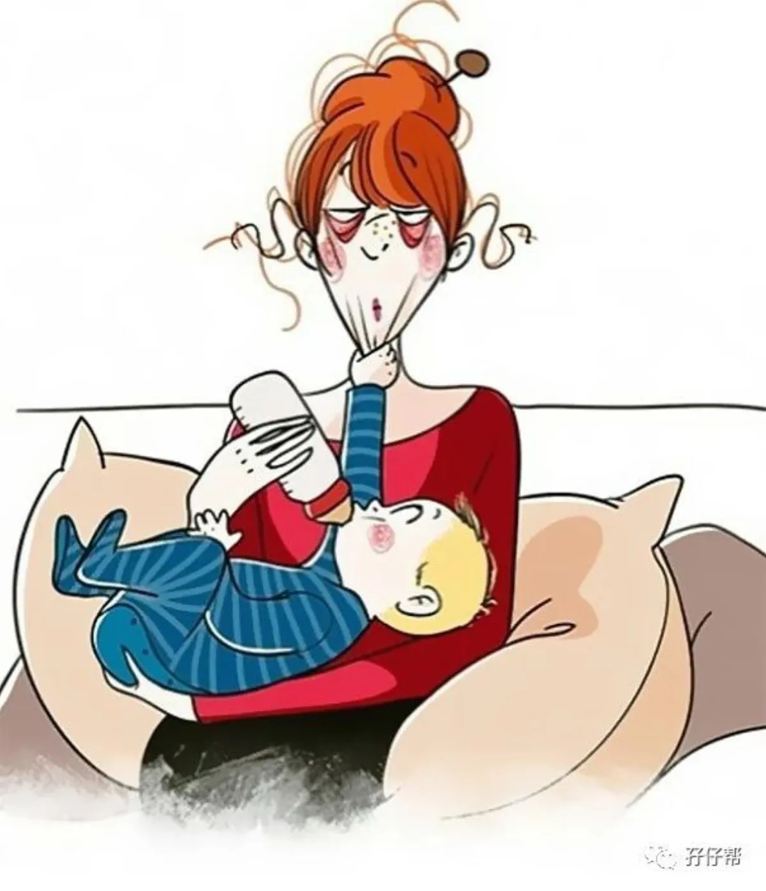
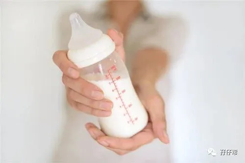
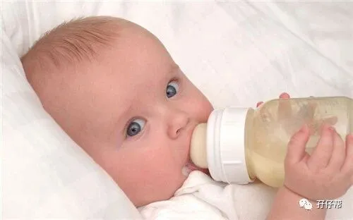
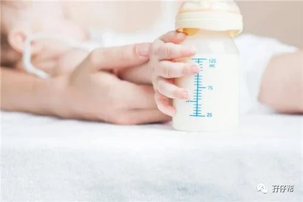
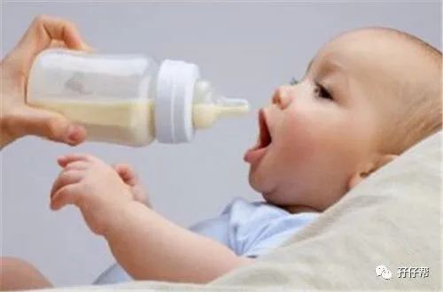
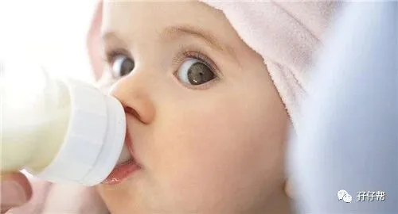
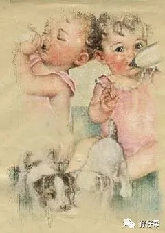

文|圆圈妈
图|来自网络
· 正 · 文 · 来 · 啦 ·
母乳是妈妈送给宝宝的第一份最珍贵的礼物，但总有一些宝宝没那么幸运，因为各种原因，没办法喝上母乳，双胞胎圆圈兄弟就是其二，一滴母乳都没有喝过。
群里也有不少妈妈提到没有母乳和不能喂母乳的无奈和遗憾，同时也为没有给宝宝们喂母乳，担心长不大而感到异常焦虑。
圆圈兄弟是喝配方奶长大的，今天这篇就来谈谈双胞胎的纯配方奶喂养，文章有点长，我列了个大纲，大家可选择性阅读：
奶粉的选择
奶瓶奶嘴和消毒锅
双胞胎的奶量
外出喝奶怎么办？
夜间喝奶怎么办？
双胞胎纯配方奶喂养的误区：盲目追赶式喂养
纯配方奶喂养的好处和坏处
寄语（喂奶路上打鸡血专用）
【01】
奶粉的选择
圆圈喝过的奶粉品牌有三种:美素佳儿港版，喜宝港版，雀巢能恩大陆版。
0—1.5岁：美素佳儿港版，这是个疯狂喝奶的阶段，我记得当时奶粉罐子占据了大厅的半壁江山。
1.5—3.5岁：据说美素佳儿太甜了，听说喜宝好，于是就换了价格更贵的喜宝，至于具体哪里好，我也不清楚！主要是当时经济条件稍好了，有钱任性了，只要说是喝了对儿子们的成长更有好处的就买了！
至于雀巢能恩，其实只吃过一罐，他们在一岁多经历了一场轮状病毒感染，症状就是呕吐拉稀发烧，吃啥吐啥，在小区一奶奶的介绍下买了能恩，也不知道是不是快要好了，还是咋滴，好像拉稀确实有所缓解了！
对于选什么品牌的奶粉，我没有经验传授，我本身就很迷糊这个品牌问题，换过两次品牌的奶粉都是跟风买的。
比如，我只是听说美素佳儿在香港很畅销，经常断货，想想那么多人买应该不会差到哪里去，于是就加入了去香港抢购美素佳儿的队伍。
网上有很多奶粉品牌的测评，我从来没看过，也没有对比过，所谓成分添加剂，我也不了解，而我也不打算去深究，毕竟，像我这种数理化经常在合格线外的外行人去研究那些DHA，磷脂，蛋白，酶...基本上是浪！费！表！情！
当然，如果你是新手父母，纯小白一枚，可以适当参考也无妨，还是有点帮助的哈！
值得一提的是，不管最终选了什么品牌的奶粉，奶粉的购买渠道很关键。我们正好处在海淘，代购，网上旗舰店….风起云涌的大时代，请一定要保证购买来源，也许你千辛万苦等来的那些漂洋过海而来的奶粉就在哪个偏僻角落的加工厂出现了！
这也是为何我选择了最原始，最艰难的方式：去香港背奶粉，我不敢说那肯定是真货，但至少我买到毒奶粉的概率还是比较低的。
在此，顺便提下早产儿奶粉。
圆圈属于早产儿，出院时医生建议喝早产儿奶粉，但我没有遵医嘱，理由如下：
圆圈出生体重有5斤以上，评分达标，有35周+的胎龄，不算早产太多。
家里已经囤好了美素，扔掉太可惜了！
医院推荐的惠氏早产儿奶粉好像不咋滴，且本人坚持贯彻不给孩儿们吃国产奶粉的方针政策。
后期转奶怕是很麻烦，接受还是排斥？又是一场持久战，怕！
吃不到葡萄说葡萄酸的心理作祟：早产儿奶粉都是智商税。
没有最好的奶粉，只有最适合的奶粉，双胞胎喝什么奶粉与当时家庭收支情况直接挂钩，因为奶粉这块真的很烧钱，其实也没啥好纠结的了，看经济状况量力而行，选性比价高的大品牌，找正规渠道就对了！
【02】
奶瓶奶嘴和消毒锅
纯配方喂养的宝宝需要哪些必备用品？《10个妈妈8个晕，双胞胎宝宝的奶瓶奶嘴选好了吗》这篇有详细介绍，可以参考下！这里就不啰嗦了。个人建议，纯配方奶喂养比较适合用玻璃奶瓶。
玻璃奶瓶可以帮助你快速感知到水温，一旦冲奶冲出经验来，只要摸一下瓶身就知道是否合适，这一举动为快速冲泡奶粉助力不少。
不要小看冲泡奶粉的技巧，这对于同时要喂两个双胞胎宝宝的家庭来说，时间就是生命。
你必须了解一个真相就是：双胞胎同时饿了吵奶喝，那种撕心裂肺二重奏式的哭泣，真的让人听了会心碎，肝疼，胃胀，脑炸…
奶瓶奶嘴消毒问题，最经济实惠就是用买个大锅把奶瓶奶嘴放进去煮，想要一劳永逸，就买奶瓶专用消毒锅等辅助用品。
提个醒：每个商品存在都有其市场需求和价值，就看适不适用于你，但很肯定的是，消毒锅最终沦为闲置物或者压箱底的几率特别高！
【03】
双胞胎的奶量
初月龄：圆圈刚出院回家的前3天，奶量少得可怜，医生建议每顿喝60ML，但实际是时多时少，喝奶间隔时间也不固定，因为他们大多数情况下都在睡，每次醒来就喂一点，有时候没喝完就睡了， 晃都晃不醒，我们没有经验，完全是晕的！
慢慢摸索到一些规律后，开始按需喂养，只要他们睡醒了就喂奶，60ml—90ml不等，每天喂6--8次。
注意这里有个小细节，每次喝完奶，我会给他们喂一小勺温水。
关于宝宝要不要喂水，说法不一，我给喂水的原因有点滑稽，担心他们喝奶粉喝多了，容易长蛀牙，所以要喂点水把口腔内的残余奶汁稀释掉。
2月龄：每顿90ml—120ml，一天5—6次，间隔2—3个小时。
3--6月龄：每顿120ml—150ml,一天4—5次，间隔2—3小时。
6--9月龄：每顿150ml—180Ml,有时210ml,一天3—4次，喝奶不固定，因为开始添加辅食了，有点凌乱！一般会依据辅食摄入量增减奶量和间隔时间。
9—12月龄：每顿120ml—150Ml,一天3--4次，开始固定时间吃辅食，如迷糊，星星面条，鸡蛋，碎肉泥...奶量相应减少。
12—18月龄：早180ml，中150ml ，晚180ml，一天3次，偶尔加餐，比如午睡前会喝90ml（这不是个好习惯，不要效仿）
18--24月龄：早中晚都是150ml，一天3次，有时中午那顿不喝。
24—36月龄：早晚120—150ml的奶量，一天2次，一直这样喝到3岁半，他们终于没有喝配方奶的强烈欲望了，睡前一瓶纯牛奶就满足了。
从此喝配方奶之路，圆满结束！
在此，吐槽下给双胞胎瓶喂的感受！
好像一天到晚都在喂奶，喂奶，喂奶！尤其是前3个月，我们全体成员（4个大人）好像一个陀螺一样围绕着两个娃的奶粉不停地转，冲奶粉—喂奶—洗奶瓶-冲奶粉-喂奶….
以至于到现在我对喂奶这件事还有阴影，每次看到诸如下图这种喂奶画面，就会禁不住老泪纵横...
抱娃喂奶，怕是这辈子得的最甜蜜的内伤，无法治愈了！
【04】
外出喝奶怎么办？
配方奶喂养的双胞胎家庭，出趟门可谓是千军万马过独木桥的架势啊，为了两宝宝在路上的口粮，不得不多准备些东西。
手机钱包和猪队友可以不带，但是这4样东西千万记得：4个奶瓶，1个暖水壶，奶粉，奶粉盒/奶粉袋。
奶粉盒/奶粉袋是神器，奶粉袋更佳，小巧方便不占空间，用完就可以扔，省事！
提前往奶粉袋里按喂奶量放入奶粉，奶瓶事先装一些温水到一定的刻度，需冲泡时加入开水抠兑即可（介意使用阴阳水冲奶粉的亲们请忽略）
比如，圆圈要喝180ML的奶粉，我会事先往奶瓶装入120ML 的温水，待到他们需喝奶时，凭经验感觉倒入适量的开水，再调下水温即可。
还有一些外出喝奶必备用品：干湿纸巾，口水巾，衣服….遇到溢奶吐奶时，可更换。
【05】
夜间喝奶怎么办？
从深度睡眠中爬起来给两嗷嗷待哺的小婴儿冲调奶粉需要很大的勇气，能爬起来的绝对是真爱，能爬起来还能迅速去冲奶粉，还能瞪着眼睛把娃抱起来喂奶的，绝对是真！生！的！
喂母乳的妈妈可以坐起来靠在枕头上，衣服撩开就可以喂了，而配方奶的我们必须迅速崛起，摸黑去准备开水，温水，奶粉，然后以非一般的速度冲泡奶粉。
这是喝配方奶的硬伤，需要时间去冲调奶粉，这是非常折腾的事情！尤其是人手不足，两宝同时大哭吵着喝奶时，真的恨不得长出三头六臂，两手冲奶粉，两手抱孩子。
为此，你可以来点辅助工具，如暖奶器，恒温壶…但这些神器只是前期有点帮助，到了后期，渐渐泡出境界了，已经升级“泡奶高手”的你，就会觉得神器已成鸡肋矣。
与此同时，最关键的是调整双胞胎同吃同睡的作息，这才是治标治本的锦囊妙计，才能让你喂奶的同时还能小睡片刻。
【06】
双胞胎纯配方奶喂养的误区
盲目追赶式喂养
育儿专家说，要帮助早产儿追赶式生长。我们总是担心他们吃不饱，总觉得他们是早产儿，要使劲吃才能赶上足月宝宝。
于是，在圆圈3月龄各项体检不达标的情况下，我不顾实际情况，盲目加大奶量，每次都会多喂，一次喂180ml 甚至210Ml,，只要不吐就使劲喂，只要他们想吃，就不会拒绝。
有时他们能喝进去，打个饱嗝，有时喝进去后会喷射状全吐出来，看得出，他们吃得好勉强，那段时间，他们的体重的确长了不少，但睡眠很不好，经常半夜哭醒，白天也不大爱玩，老是无理由哭闹，我们全都心力交瘁了！
经历过育婴师的培训后，才惊觉自己之前的做法是多么愚蠢。在这里提醒下，早产儿要追赶式生长一定要根据宝宝的情况规范性调整，不要拿所谓的标准奶量盲目加大或减少宝宝的奶量。
有些宝宝喝100ML就饱了，有些宝宝喝完180ml还想再来一瓶，所谓的标准就是自己跟自己比，每个阶段地比，抛开事实依据的比较都是耍流氓，无意义！
至于那些奶量标准，生长曲线图.....只是参考，低了也不要太悲伤，咨询儿保医生，调整喂养方案，高了也不要太激动，没长大成人之前，每个孩子都会给你制造一种上一秒如漫步云端，下一秒如坠入地狱的体验！
【07】
纯配方奶喂养的好处和坏处
我能想到的好处就是，我不用经历开奶那种痛苦，喂奶那种伤神，挤不出奶那种绝望，催奶那种纠结…最重要的是，我可以好好睡觉！
娃饿了醒了，有奶瓶奶粉在就行，我几乎可以哪里凉快哪里去！当然前提是要有一个给力的队友，他支持你心安理得地当个“后妈”，不管不问！呼呼大睡！
坏处就是，喝配方奶的宝宝普遍体质较差，圆圈哥俩1岁前去医院的频率从未被同小区的宝宝们超越过！
从我的养育双胞胎经历再一次验证一个常识：母乳是妈妈给宝宝最好的礼物，全世界最美味的口粮，没有之一！
如果可以，如果有选择，如果给我机会，我愿意承受所有喂母乳的痛，坚持母乳喂养！
在此致敬所有喂母乳的双胞胎妈妈，你们真的好伟大！正如明星双胞胎妈妈范玮琪所说，坚持给双胞胎喂母乳这件事足够我吹一辈子的牛逼！
【08】
寄语（喂奶路上打鸡血专用）
喝配方奶长大的圆圈兄弟身高体重都在同龄人水平，我指的是理论上（就是按那个生长曲线图的标准），实际上呢？他们的个头在班上是最矮的，不知道是不是其他孩子营养过剩还是我们家孩子喂养不当，营养不良，再或者是我160cm的身高配上180cm的队友，拖后腿了，基因突变了？
于是，我时常这样安慰自己：我的孩子竞争不过别的孩子，但还有很多孩子的父母竞争不过我！哈哈！
也许在某些育儿大咖，学霸级的奶爸辣妈眼里，我的这些配方奶喂养经历处处是槽点，但有一点值得肯定：当年在襁褓中任我又亲又抱的崽儿们，终于被我拉扯大，现在已经可以满大街撒泼撒野了….
已然是老油条的我算是明白了，不管我用什么方式养娃，每一种方式都会被人诟病，最后都会被判断是错的！
听我一声劝吧，那些没办法给双胞胎喝上母乳的妈妈们，别太焦虑！不管是纯配方奶喂养还是母乳，喝多还是喝少，照猪养还是照书养，精细圈养还是佛系散养，我们的双胞胎孩子们终究会长大的！
看着双胞胎一起哭，一起笑，一起上学，一起打架，一起成长…一种无法言喻的成就感早已治愈了你千疮百孔的玻璃心，谁还记得或者介意曾经养娃路上那点是是非非呢？
这篇是双胞胎圆圈妈妈的纯配方奶喂养攻略，纯母乳喂养和配方奶+母乳混合喂养的攻略呢？相信很多人很感兴趣，欢迎有这方面经验的妈妈们来稿分享你的经验哦！
-END-
今日互动话题
#双胞胎的喂奶路上，你崩溃过吗？#
评论区聊一聊呗！
一关注孖仔帮一






